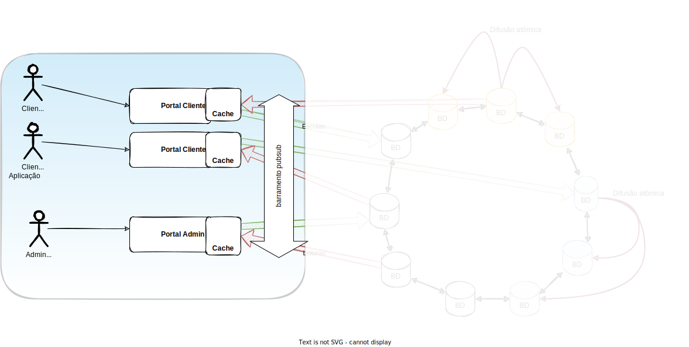
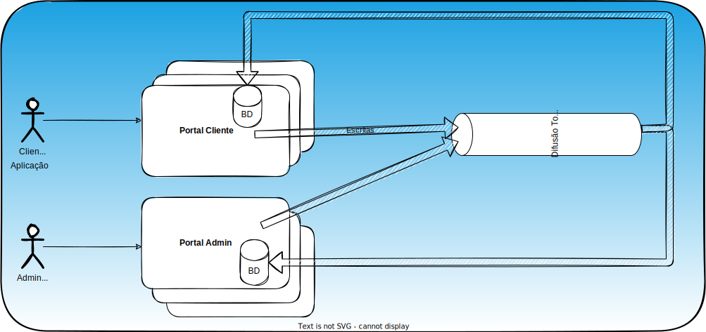

Projeto
A área de computação distribuída é rica em aplicações e desenvolvê-los é topar de frente com vários problemas e decidir como resolvê-los ou contorná-los e, por isto, nada melhor que um projeto para experimentar em primeira mão as angústias e prazeres da área. Assim, proponho visitarmos o material destas notas à luz de uma aplicação genérica mas real, desenvolvida por vocês enquanto vemos a teoria.
O projeto consiste em uma aplicação com dois tipos de usuários, os clientes e os administradores, que você pode pensar em termos de compradores e lojistas, pacientes e médicos, ou consumidores e produtores de conteúdo, dependendo da aplicação que você resolver implementar.
As funcionalidades são expostas para estes usuários via dois tipos de aplicações distintas, o portal do cliente e o portal administrativo, mas ambos manipulam a mesma base de dados. Múltiplas instâncias de cada portal podem existir e cada instância mantém um cache da base de dados em memória, com as entradas mais recentemente acessadas.
A totalidade da base é particionada usando consistent hashing. Cada partição é replicada em outros nós usando um protocolo de difusão atômica.
A arquitetura do sistema será híbrida, contendo um pouco de Cliente/Servidor e Peer-2-Peer, além de ser multicamadas. Apesar de introduzir complexidade extra, também usaremos múltiplos mecanismos para a comunicação entre as partes, para que possam experimentar com diversas abordagens.
O sistemas tem duas aplicações, CLI ou GUI, para os dois tipos de usuários do sistema, clientes, e administradores. Estas aplicações se comunicarão com os portais para manipular os dados dos clientes e associados a cada cliente. A aplicação do administrador manipula clientes, isto é, permite o CRUD de clientes. A aplicação do cliente permite manipular os dados associados aos clientes.
O cadastro do cliente inclui a provisão de um identificador único do cliente CID (client id). Os dados dos clientes são mantidos em uma tabela CID -> Dados do Cliente, em memória (use uma tabela hash). O CID tem tipo BigInteger ou equivalente1; você deve decidir o que compõe os dados do cliente, mass eles devem ser armazenados como uma string JSON. A comunicação entre administradores e portal Administrativo se dá por uso direto de sockets e TCP, ou middleware pub/sub Mosquitto, ou gRPC.
Somente clientes devidamente cadastrados no sistema podem ter suas operações executadas. A comunicação entre cliente e portal Cliente se dá por de sockets e TCP, ou middleware pub/sub Mosquitto, ou gRPC. O CID do cliente executando operações no porta cliente deve ser informado em cada operação para "autenticar" o cliente e autorizar a execução da operação. O cliente tem um "saco" de dados com diversas entradas armazenados no sistema, que podem ser manipuladas individualmente ou em conjunto; cada entrada corresponde a uma entrada no banco de dados, mantido em memória (use uma tabela hash).
Aqui chamarei cada entrada no saco de "tarefa", mas dependendo da aplicação que você escolher, tarefas podem ser, por exemplo, eventos em um calendário ou entradas em uma lista compras.
Cada tarefa tem um título, que serve de identificador da tarefa, e um corpo; ambos são do tipo String, JSON ou não.
Os dados são mantidos em uma tabela hash e múltiplas entradas podem ser necessárias para armazenar e manter uma tarefa, isto é, algumas entradas podem ser de metadados, por exemplo, índice Por exemplo, para representar duas tarefas, t1 e t2, com corpos c1 e c2, associadas ao cliente cliente1, podemos ter as seguintes entradas.
cliente1 -> [t1,t2]cliente1:t1 -> c1cliente1:t2 -> c2
Com este formato, podemos identificar os títulos das tarefas associadas ao cliente1 e, a partir desta lista, identificar o conteúdo associado a cada tarefa.
Este formato também permite que múltiplos clientes tenham tarefas com o mesmo título.
O formato exato em que os dados serão armazenados pode variar e, por isso, nos casos de uso apresentados a seguir, as API usadas devem ser consideradas intenções e não necessariamente o que será implementado no seu trabalho.
Casos de Uso
Todo
- Diagramas de interação.
Manipulação Clientes
- Inserção de Cliente
- Administrador
- Gera um CID para cada cliente, baseado em seu nome ou outro atributo único.
inserirCliente(CID, "dados do cliente")- Informa o CID para o cliente
- Portal Administrador
- Executa a operação e retorna código de erro/sucesso.
- Se cliente existia, falha a operação.
- Se cliente não existia, insere dados no banco e atualiza a cache.
- Executa a operação e retorna código de erro/sucesso.
- Cliente
- Recebe CID diretamente do administrador
- Administrador
- Modificação de Cliente
- Administrador
- Determina CID de cliente a ser modificado.
modificarCliente(CID, "novos dados do cliente")
- Portal Administrador
- Executa a operação e retorna código de erro/sucesso.
- Se cliente existe, atualiza o cliente e atualiza a cache.
- Se cliente não existe, retorna erro.
- Executa a operação e retorna código de erro/sucesso.
- Administrador
- Recuperação de Clientes
- Administrador
- Determina CID de cliente a ser recuperado
recuperarCliente(CID)
- Portal Administrador
- Executa a operação e retorna código de erro/sucesso.
- Se cliente não existe na cache, pesquisa banco de dados e atualiza a cache caso encontre.
- Se cliente (não) existe na cache, retorna (erro) informação.
- Executa a operação e retorna código de erro/sucesso.
- Administrador
- Remoção de Cliente
- Administrador
- Determina CID de cliente a ser removido
apagarCliente(CID)
- Portal Administrador
- Executa a operação e retorna código de erro/sucesso.
- Apaga dados do banco.
- Apaga dados da cache, se existe.
- Executa a operação e retorna código de erro/sucesso.
- Administrador
Manipulação de Tarefas dos Clientes
Nesta descrição, a interação com a cache foi omitida, mas deverá ser implementada.
-
Inserção de tarefa
- Cliente
- Usa o CID informado pelo administrador
inserirTarefa(CID, "titulo da tarefa", "descrição da tarefa")
- Portal Cliente
- Autentica o cliente
- Executa a operação e retorna código de erro/sucesso.
- Cliente
-
Modificação de tarefa
- Cliente
- Usa o CID informado pelo administrador
modificarTarefa(CID, "titulo da tarefa", "nova descrição da tarefa")
- Portal Cliente
- Autentica o cliente
- Executa a operação e retorna código de erro/sucesso.
- Cliente
- Enumeração de tarefas
- Cliente
- Usa o CID informado pelo administrador
listarTarefas(CID)
- Portal Cliente
- Autentica o cliente
- Executa a operação e retorna código de erro/sucesso.
- Cliente
- Remoção de todas as tarefas
- Cliente
- Usa o CID informado pelo administrador
apagarTarefas(CID)
- Portal Cliente
- Autentica o cliente
- Executa a operação e retorna código de erro/sucesso.
- Cliente
- Remoção de tarefa
- Cliente
- Usa o CID informado pelo administrador
apagarTarefa(CID, "titulo da tarefa")
- Portal Cliente
- Autentica o cliente
- Executa a operação e retorna código de erro/sucesso.
- Cliente
Interação entre portais
Etapa 1 - Usuários/Portais
- Implementar os casos de uso usando como cache tabelas hash locais aos portais Cliente e Administrador.
- Se certificar de que cada operação use uma API distinta na comunicação via gRPC ou uma mensagem distinta no uso de pub/sub.
- Se certificar de que todas as API possam retornar erros/exceções e que estas são tratadas; explicar sua decisão de tratamento dos erros.
- Implementar testes automatizados de sucesso e falha de cada uma das operações na API.
- Documentar o esquema de dados usados nas tabelas.
- Usar dois tipos de comunicação distintos entre clientes e portais.
- O sistema deve permitir a execução de múltiplos cliente, administradores, portais cliente e portais administrador.
- Implementar a propagação de informação entre as diversas caches do sistema. Sugiro usar pubsub, já que a comunicação é de 1 para muitos.

Uma possível instância desta etapa do projeto seria a seguinte
Etapa 2 - Banco de dados Replicado
Nesta etapa você modificará o sistema para que atualizações dos dados sejam feitas consistentemente entre todas as réplicas usando um protocolo de difusão atômica.

-
Objetivos
- Replicar a base de dados para obter tolerância a falhas.
-
Desafios
- Certificar-se de que o portais são máquinas de estados determinística
- Compreender o uso de Difusão Atômica em nível teórico
- Compreender o uso de Difusão Atômica em nível prático
- Use Ratis para java
- Para Python, OpenReplica é uma boa opção.
- Aplicar difusão atômica na replicação do servidor
- Portal
- A API para clientes continua a mesma.
- Requisições para o servidor (linha contínua) são encaminhadas via Ratis (linha tracejada) para ordená-las e entregar a todas as réplicas (linha pontilhada) para só então serem executadas e respondidas (pontilhado fino).
- Dados não são mais armazenados em disco pela sua aplicação mas somente via Ratis.
- Cliente
- Sem alteração.
- Testes
- O mesmo framework de testes deve continuar funcional
- Comunicação
- Entre cliente e portais, não é alterado.
- Entre servidores, usar Ratis
- Apresentação
- Sem alteração, isto é, gravar um vídeo demonstrando que os requisitos foram atendidos.
-
Inteiro de 64 bits não é BigInteger. ↩